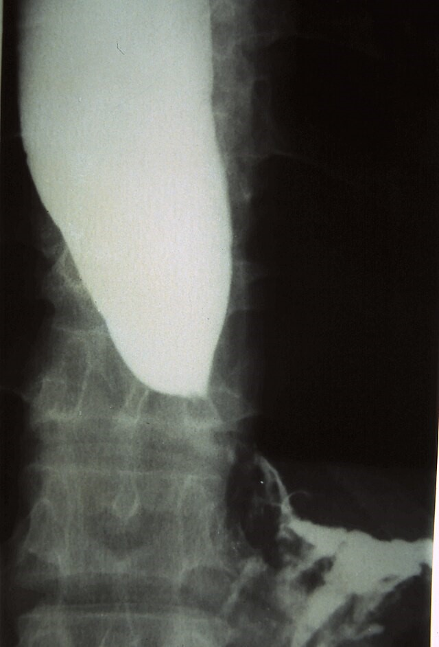

- 編輯格式
- 顏色註記方式
- 重要標題 母標題藍色最暗標記/子標題藍色較暗25%標記
- 重要術式治療藥物 綠色標記+粗體
- 重要內文 紅色標準色彩/橘色+粗體橘色那一欄第一個如果同色太醜就紅橘相間
- 直接來複製顏色格式一定不會錯xd
- 定義
- 賁門弛緩不能Achalasia一種罕見的食道運動障礙疾病特徵為食道肌間神經叢的神經節細胞缺失導致食道蠕動消失和下食道括約肌Lower esophageal sphincterLES鬆弛功能受損
- 病生理機轉
- 病因
- 自體免疫反應導致食道肌間神經叢中抑制性神經節細胞的喪失
- 歸因於潛伏的人類單純皰疹病毒1型感染與遺傳易感性結合
- 由於抑制性神經元的缺失導致吞嚥時下食道括約肌LES鬆弛受損以及蠕動消失
- 長期賁門弛緩不能的特徵是食道進行性擴張和乙狀結腸樣畸形伴隨LES肥大
- 症狀
- 典型症狀
- 吞嚥困難Dysphagia對固體和液體食物都有吞嚥困難
- 反流Regurgitation當食物、液體和分泌物滯留在擴張的食道中時發生
- 胸痛可能在病程早期出現。患者描述為擠壓、壓迫感的胸骨後疼痛有時放射到頸部、手臂、下顎和背
- 體重減輕
- 胃灼熱
- 長期症狀
- 慢性逆流
- 吸入性肺炎
- 支氣管炎
- 肺膿瘍
- 慢性食道炎
- 增加鱗狀細胞癌風險
- 診斷
- 內視鏡檢查Endoscopy
- 初步評估
- 用於排除胃賁門交界處的腫瘤或良性機械性狹窄也可排除假性賁門弛緩不能
- 鋇餐X光檢查Barium swallow x-ray
- 表現為食道擴張、排空不良、氣液平面以及LES處的錐形變窄呈現鳥嘴樣Bird beak sign外觀下方圖
- 偶爾會觀察到食道膈上憩室epiphrenic diverticulum
- 長期賁門弛緩不能的食道可能呈現乙狀結腸樣變形
- 食道測壓術Esophageal manometry
- 診斷標準是LES鬆弛受損和蠕動消失
- 高解析度測壓術根據非蠕動食道的壓力模式區分出三種賁門弛緩不能的亞型經典型、食道受壓型、痙攣性賁門弛緩不能
- 測壓術可以識別食道擴張和食物滯留之前的早期疾病因此是最敏感的診斷測試
- 治療
- 治療目的
- 降低LES壓力以便重力和食道加壓可促進食道排空
- 蠕動無法恢復
- 藥物治療Pharmacologic therapies
- 硝酸鹽或鈣通道阻滯劑進食前給藥但由於其對血壓的影響應謹慎使用
- 肉毒桿菌毒素在內視鏡引導下注射到LES中抑制神經末梢的乙醯膽鹼釋放
- 西地那非Sildenafil及其他磷酸二酯酶抑制劑有效降低LES壓力但實用性限制了其在賁門弛緩不能中的臨床應用。
- 介入性治療
- 氣球擴張術Pneumatic dilation一種內視鏡技術使用非順應性圓柱形氣球擴張器放置於LES處並充氣至3-4公分直徑
- LES肌切開術LES myotomy
- 腹腔鏡Heller肌切開術Laparoscopic Heller myotomy最常見的achalasia手術通常與抗逆流手術部分胃底折疊術同時進行
- 經口內視鏡食道肌切開術Peroral esophageal myotomy POEM一種內視鏡方法在食道壁的黏膜下層創建一個通道透過電燒截斷LES和遠端食道的環形肌。
- 影像補充鋇劑吞食攝影
|
Bird beak sign |
Corkskrew esophagus |
|

|
|
|
Achalasia |
Esophagus spasm |

- Reference
- Harrison's principles
- Wikimedia